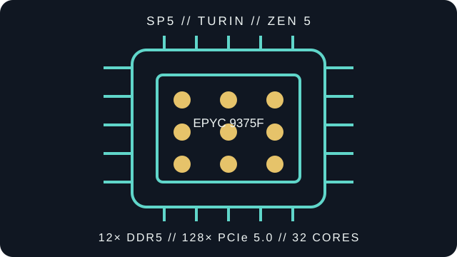

[ SERVER CPU // ZEN 5 TURIN // 2024 ]
AMD EPYC 9375F
5th Generation AMD EPYC 9005 Series / Turin, Zen 5 server processor: 32 cores / 64 threads, 3.85 GHz base / up to 4.8 GHz max boost, 256 MB L3, 320 W TDP, SP5, 12-channel DDR5-6400 ECC, and 128 lanes of PCIe 5.0. Check the full model suffix and server qualification before deployment.

MODEL IDENTIFICATION: This record describes AMD EPYC 9375F. The P suffix identifies a single-socket product; confirm the platform's CPU support list, BIOS/AGESA version, and exact processor marking before service or installation.
Recorded specifications
| Cataloged model | AMD EPYC 9375F |
|---|---|
| Generation / microarchitecture | 5th Generation EPYC 9005 Series / Turin; Zen 5. |
| Core / thread count | 32 cores / 64 threads |
| Frequency | 3.85 GHz base / up to 4.8 GHz max boost |
| Cache | 256 MB L3 |
| Thermal design power | 320 W TDP; configurable operating range depends on the SKU and platform configuration. |
| Socket / package | SP5 (LGA 6096) |
| Memory | 12-channel DDR5-6400 ECC; actual DIMM speed depends on population, rank, system qualification, and firmware. |
| PCI Express | 128 lanes PCIe 5.0 |
| Socket scaling | 1P / 2P |
Server-platform compatibility
Requires an SP5 server explicitly qualified for 5th Generation EPYC 9005 Turin and AMD EPYC 9375F. Socket fit alone does not guarantee support. This non-P model may be used in single- or dual-socket systems when the system vendor qualifies that configuration.
- Check the server or motherboard manufacturer's support list for this exact model, its minimum BIOS/AGESA level, board revision, and permitted socket count.
- Validate 12-channel ECC DDR5 DIMM compatibility and population, supported memory rate, 320 W processor cooling and power delivery, chassis airflow, firmware, and PCIe/CXL device support against the system documentation.
- Follow the system vendor's SP5 service procedure and use the specified carrier, socket tool, and torque sequence. Record the OPN, stepping, BIOS version, memory layout, and thermal configuration for any deployment or repair.
Sources & further reading
- AMD — AMD EPYC 9375F product specificationsManufacturer's SKU-specific specification page. Confirm model suffix and current specification before selecting a host system.
- AMD — Processor specifications catalogAMD's processor specification directory for checking the exact model entry.
- AMD — 5th Gen EPYC 9005 Series Product BriefManufacturer product-family and platform specifications for the Turin generation.
- AMD — EPYC 9005 Processor Architecture OverviewManufacturer architecture reference for the EPYC 9005 platform and Zen 5 context.
Maximum boost is a peak operating specification, not a guaranteed sustained all-core frequency. Real operation depends on workload, cooling, firmware, and system-vendor limits.